アプリ マニュアル
選手・部員向けアプリ（iOS / Android）の操作マニュアルです。初めて使う方は 「2. はじめ方」 を上から順にそのまま進めれば、セットアップが完了します。
対象アプリ: BukatsuLog（選手・部員向けアプリ）
マニュアル版数: ver. 2.0
対象アプリバージョン: 1.0.0（build 20）
配布形態: テスト版（iOS: TestFlight / Android: Google Play 外部テスト）。インストールリンクは管理者から受け取ってください。
コーチ向け Web 管理画面の操作は本マニュアルの対象外です。
0. アプリの入手方法（テスト版）
BukatsuLogは現在テスト版として配布しています。App Store / Google Play で検索しても見つかりません。以下のリンクからインストールしてください。
・iOS
①以下のリンクからTestFlightアプリのダウンロード（テスト版アプリのダウンロードに必要なアプリです）
TestFlightアプリ - App Store
②以下のリンクからBukatsuLogのテストに参加
https://testflight.apple.com/join/QRjpJhGF
・Android
以下のリンクからテストに参加
https://play.google.com/store/apps/details?id=com.jp.bukatsulog
⚠️ iPhone のテスト版（TestFlight）には有効期限があります。 期限が切れると起動できなくなるので、TestFlight から最新版に更新してください。更新の案内は TestFlight の通知で届きます。
⚠️ 上記のリンクには参加人数の上限があります。 開けない・エラーになる場合は管理者にお問い合わせください。
1. BukatsuLog とは
練習動画をアップロードするとAI がフォームを分析してアドバイス を返してくれる、部活動のための練習記録アプリです。
できること（大きく 4 つ）
| できること | 使う場所 | |
|---|---|---|
| ① | 練習動画を AI に分析してもらう | 画面下中央の赤い「動画分析」ボタン |
| ② | AI コーチに質問する／コーチのコメント・赤ペンを見る | 動画のフィードバック画面 |
| ③ | 目標・強み・弱みを「サクセス要素」として育てる（Lv・称号） | 「目標」タブ（目標ノート） |
| ④ | チームの仲間と練習を共有する（投稿・いいね・コメント・DM） | 「ホーム」「トーク」タブ |
大事な前提
- BukatsuLog はチーム単位の閉じたアプリです。利用開始にはコーチから受け取る招待コードが必要です。
- 投稿や動画は、参加しているチームのメンバーとコーチだけが見られます。
- 招待コードがまだ手元にない場合は、所属チームのコーチに発行を依頼してください。
- アプリで使えるのは選手用の招待コードです。コーチ用・管理者用のコードを入れると「アプリでは使用できません」と表示されます（コーチはコーチ向け Web からご参加ください）。
2. はじめ方（初回セットアップ）
ここが本マニュアルの中心です。画面の順番どおりに説明します。
2-0. 準備するもの
| 準備するもの | 補足 |
|---|---|
| テスト版アプリのインストールリンク | 管理者から受け取ります。 App Store / Google Play で検索しても出てきません（→ 2-1）。 |
| 招待コード | コーチから受け取ります（例: ABCD2345）。半角英数字、最大 12 文字。 |
| スマートフォン | iOS または Android。動画を撮影・保存できる端末。 |
| メールアドレス または 電話番号 | 強く推奨。 登録しておかないと、機種変更・アプリ削除でデータが戻せません（→ 14）。 |
| インターネット接続 | AI 分析・動画アップロードで通信します。Wi-Fi 推奨。 |
所要時間の目安: 10〜15 分（AI とのチャットを含む）
2-1. アプリをインストールして起動する
BukatsuLogは現在テスト版として配布しています。App Store / Google Playで検索しても見つかりません。
管理者からインストール用のリンクを受け取ってから、下の手順に進んでください。
| 端末 | インストール方法 |
|---|---|
| iPhone / iPad | TestFlight（Apple のテスト用アプリ）経由で入れます。 ① App Store から TestFlight をインストール ② 管理者から受け取ったリンクを開く ③ TestFlight が開くので 「インストール」（または「Accept」→「インストール」）をタップ |
| Android | Google Play の外部テスター用リンクから入れます。 ① 管理者から受け取ったリンクを開く ② 「テスターになる」 をタップして参加 ③ 同じページの Google Play へのリンクからインストール |
- ・上の手順で BukatsuLog をインストールします。
- ・アプリを開きます。初回起動時、次の確認が表示されることがあります。
| 表示されるもの | どうするか |
|---|---|
| トラッキングの許可（iOS） | どちらを選んでもアプリは使えます。 |
| 通知の許可 | 「許可」を推奨。 コーチのコメントや AI の添削完了をお知らせします。 |
| カメラ・写真へのアクセス | 動画を撮る／選ぶときに必要です。「許可」してください。 |
電波が弱い場所などで起動に失敗すると 「接続できませんでした」 の画面が出ます。電波の良い場所で 「再試行」 をタップしてください（アプリを入れ直す必要はありません）。
テスト版についての注意
- iPhone のテスト版（TestFlight）には 有効期限があります。 期限が切れると起動できなくなるので、TestFlight から最新版に更新してください。更新の案内は TestFlight の通知で届きます。
- インストールリンクは参加人数に上限があります。開けない・エラーになる場合は管理者に連絡してください。
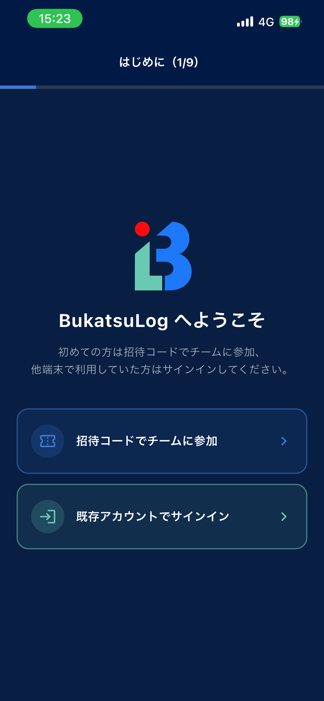
2-2. ステップ 0 ── 「BukatsuLog へようこそ」
最初に、2 つの入口が表示されます。どちらか一方を選びます。
| ボタン | 選ぶ人 |
|---|---|
| 「招待コードでチームに参加」（青） | 初めて使う人。 こちらを選びます。 |
| 「既存アカウントでサインイン」（緑） | 以前ほかの端末で使っていて、メールアドレスまたは電話番号を登録済みの人（→ 2-12） |
初めての方は 「招待コードでチームに参加」 をタップしてください。
画面上部に「はじめに（1/9）」のように、いま何番目のステップかが表示されます。数字は所属チームの設定によって変わります（クラス選択があるチームでは 1 つ増えます）。
2-3. ステップ 1 ── 招待コードを入力して認証する
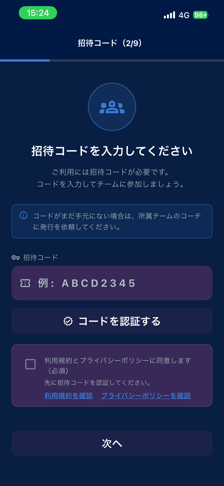
このステップは 「コードの認証」→「規約に同意」→「次へ」 の 3 段階です。
- 入力欄に、コーチから受け取ったコードを入力します。
- 小文字で打っても自動で大文字になります。
- 入力例:
ABCD2345
- 「コードを認証する」 をタップします。
- 「招待コードを認証しました。」と緑色で表示されれば成功です。ボタンは「認証済み」に変わります。
- その下の 「利用規約とプライバシーポリシーに同意します（必須）」 にチェックを入れます。
- 認証が済むまでチェックは押せません（「先に招待コードを認証してください。」と表示されます）。
- 「利用規約を確認」「プライバシーポリシーを確認」からブラウザで全文を読めます。
- 下部の 「次へ」 をタップして先に進みます。
エラーが出たとき
| 表示されるメッセージ | 原因と対処 |
|---|---|
| 「招待コードが見つかりませんでした。」 | コードの打ち間違いです。数字の 0／英字の O、1／I を確認してください。 |
| 「招待コードが期限切れか、使用回数を超えています。」 | コードの有効期限切れ、または使用上限に達しています。コーチに新しいコードを発行してもらってください。 |
| 「アプリでは使用できません。…」 | コーチ用・管理者用のコードです。選手用のコードをコーチに発行してもらってください。 |
| 「サインインが必要です。」 | 通信が不安定な可能性があります。電波の良い場所でアプリを再起動してください。 |
| 「入会に失敗しました。…」 | コードを確認のうえ、もう一度お試しください。改善しない場合はコーチに連絡してください。 |
この画面の下にある「既にアカウントをお持ちの方はこちら →」からも、サインイン画面に移れます。
一度コードを認証したあとチュートリアルを途中でやめてしまっても、同じコードでもう一度認証できます（使用回数の上限には数えられません）。
2-4. ステップ 2 ── アカウントを登録する（任意・強く推奨）
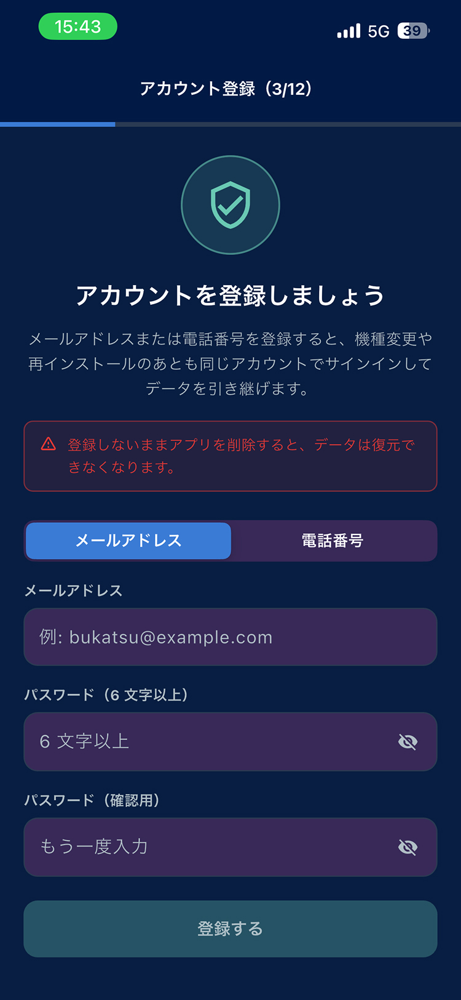
「アカウントを登録しましょう」という画面が出ます。
ここでの登録は任意ですが、必ず登録することを強くおすすめします。
⚠️ 登録しないままアプリを削除すると、データは復元できなくなります。
動画・AI のアドバイス・目標ノートの Lv などが、すべて戻せません。
登録する場合
- メールアドレス または 電話番号 を選びます。
- メールアドレスの場合: メールアドレスとパスワードを入力して登録します。
- 電話番号の場合: 電話番号を入力し、SMS で届いた確認コードを入力します。
- 「アカウントを登録しました」と表示されたら、自動で次のステップに進みます。
後回しにする場合
- 画面下の 「あとで登録する（スキップ）」 をタップすると次に進めます。
- 後から
マイページ → 設定 → アカウントの引き継ぎでいつでも登録できます。その日のうちに登録しておきましょう。
2-5. ステップ 3 ── 名前を入力する
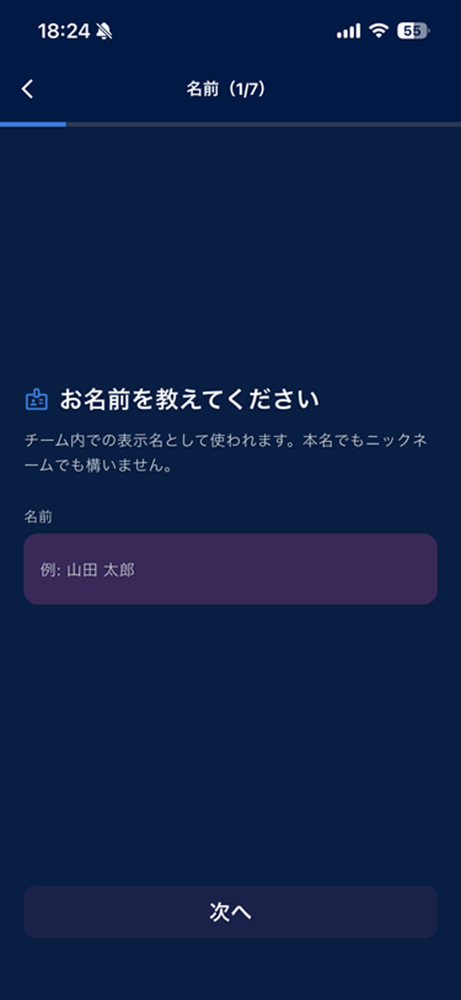
- チーム内での表示名になります。本名でもニックネームでも構いません。
- 入力例:
山田 太郎 - 入力すると下の 「次へ」 が押せるようになります。
名前は後から マイページ → プロフィール設定 で変更できます。
2-6. ステップ 4 ── クラスを選ぶ（チームによって表示されます）
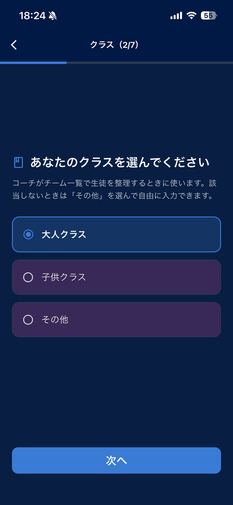
コーチ側でクラスを登録しているチームだけ、この画面が出ます。表示されない場合は次へ進んでください。
- 一覧から自分のクラスを選びます。
- 当てはまるものがなければ 「その他」 を選び、下の欄にクラス名を自由に入力します（例:
特進コース）。 - 「次へ」 をタップします。
コーチがチーム一覧で部員を整理するときに使います。
2-7. ステップ 5 ── 取り組んでいる種目を入力する
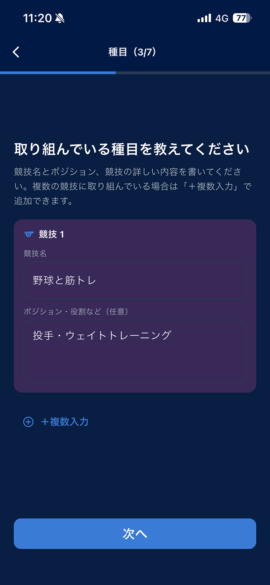
自由記述です。競技名を 1 つ以上入力してください。
| 入力欄 | 必須 | 入力例 |
|---|---|---|
| 競技名 | 必須 | 野球 / サッカー / 筋トレ |
| ポジション・役割など | 任意 | 投手。変化球を練習中 |
- 複数の競技をやっている場合は 「＋複数入力」 をタップして欄を増やせます（例: 野球 + 筋トレ）。
- 不要な欄は右上の
×で削除できます（1 件は必ず残ります）。 - ポジション欄のヒント文（薄いグレーの例文）は、入力した競技名に合わせて AI が自動で用意します。数秒待つと例文が競技に合ったものに変わります。
複数競技を入力すると、この後の質問が「競技ごと」になります。 画面上部に競技のタブが出るので、タブを切り替えて全競技分を入力してください。入力済みの競技には緑のチェックが付きます。
2-8. ステップ 6 ── 自分のレベル感を選ぶ
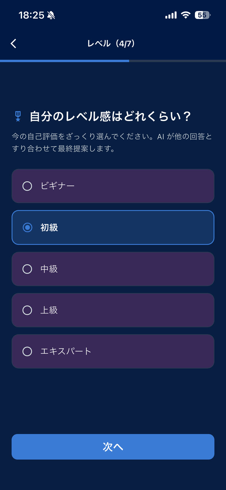
次の 5 段階から、いまの自己評価をざっくり選びます。
ビギナー / 初級 / 中級 / 上級 / エキスパート
- 厳密でなくて構いません。AI がほかの回答とすり合わせて最終的な提案をします。
- 複数競技のときは、競技タブを切り替えてすべての競技を選んでください（全部埋まるまで「次へ」は押せません）。
ここで選んだレベルは、AI のアドバイスの詳しさ・むずかしさの調整に使われます。後から 設定 → チュートリアルの回答を編集 で変更できます（→ 12）。
2-9. ステップ 7 ── 将来の目標・憧れを書く
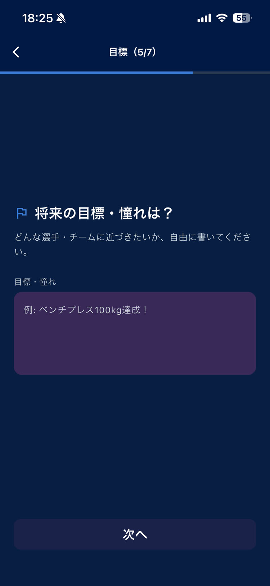
どんな選手・チームに近づきたいかを、自由に書きます。
- 入力例:
県大会でレギュラーになる/チームで一番安定した投球フォームにする - 具体的に書くほど、この後の AI の提案が的確になります。
- 複数競技のときは競技ごとに入力します（競技タブで切り替え）。
2-10. ステップ 8 ── 「AI と深掘り」（チャット）
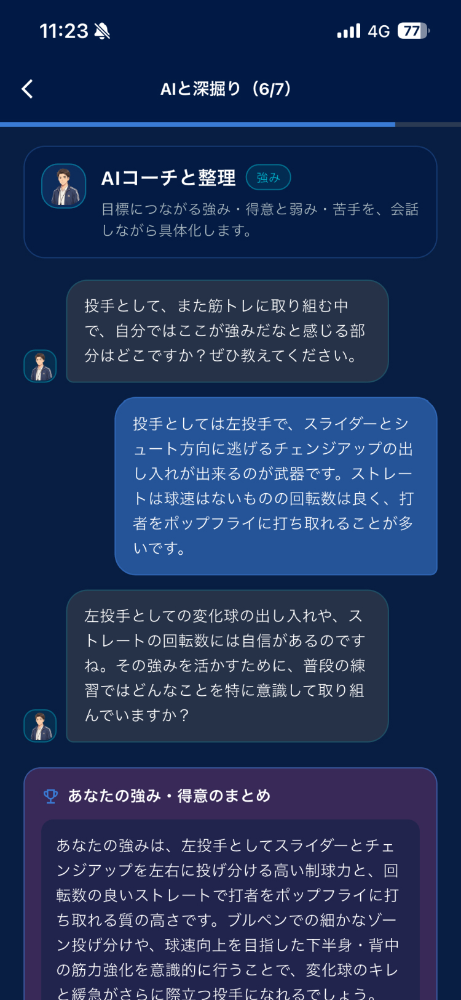
ここが初回セットアップの山場です。AI コーチとチャットしながら、あなたの強みと弱みを具体化し、サクセス要素 4 個と自主練メニューを作ります。
進み方は次の 6 段階です。画面上部の小さなラベル（「強み」「弱み確認」など）で、いまどの段階かが分かります。
① 強み・得意を深掘りする（ラベル: 強み）
- AI が質問してくるので、下の入力欄に答えて送信します。
- 何度かやりとりが続きます。思いつく限り具体的に答えてください（例: 「最後まで走り切れる」「守備の反応が速い」）。
② 強みのまとめを確認する（ラベル: 強み確認）
「あなたの強み・得意のまとめ」カードが出ます。
| ボタン | 動作 |
|---|---|
| 「この内容でOK」 | 次（弱みの深掘り）へ進みます。 |
| 「もっと具体的にする」 | AI がさらに質問してくれます。 |
- 直したいことがはっきりしている場合は、ボタンではなく入力欄に自由に書いて送信しても直してもらえます。
③ 弱み・苦手を深掘りする（ラベル: 弱み）
- 同じように、AI の質問に答えていきます。
- 小さな違和感でも書き出してみてください（例: 「速い球に振り遅れる」）。
④ 弱みのまとめを確認する（ラベル: 弱み確認）
「あなたの弱み・苦手のまとめ」カードで 「この内容でOK」 または「もっと具体的にする」を選びます。
⑤ サクセス要素 4 個を確認する（ラベル: 確認）
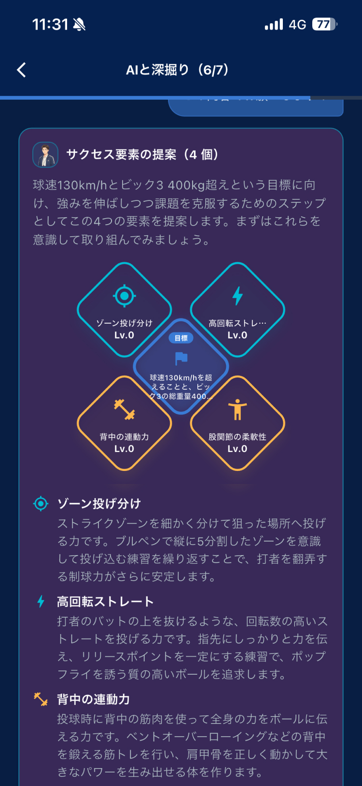
AI が「サクセス要素」を 4 個（強み 2 個・弱み 2 個）提案します。中央にあなたの目標が置かれた図で表示されます。
| ボタン | 動作 |
|---|---|
| 「承認する」 | 確定して次（自主練メニュー）へ進みます。 |
| 「やり直す」 | 別の切り口で作り直してもらいます。 |
- 「体幹をもっと入れてほしい」のように、入力欄に要望を書いて送ってもやり直せます。
⑥ 自主練メニューを選ぶ（ラベル: メニュー）
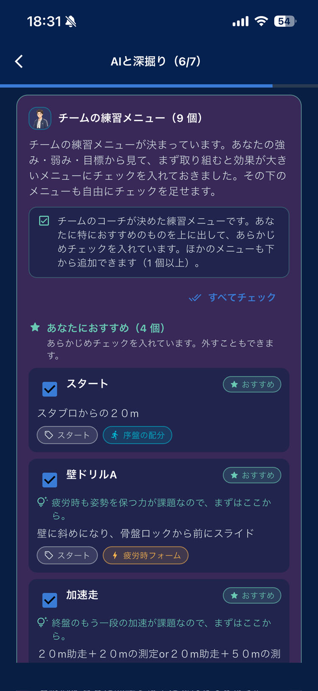
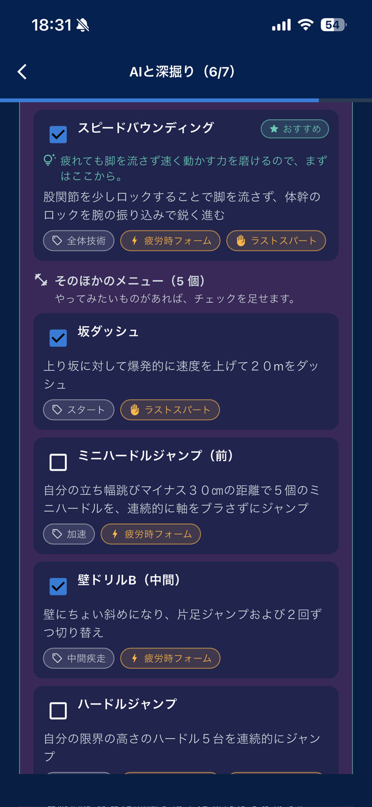
チームの設定によって、ここで出てくるものが 2 通りに分かれます。
パターン A: AI が提案する（コーチが練習メニューを登録していないチーム）
AI が自主練メニューを 8 個提案します。見出しは「自主練メニューの提案（8 個）」です。
- やってみたいメニューにチェック を入れます（1 個以上必須）。
- 「すべてチェック」でまとめて選ぶこともできます。
- 「採用したメニューで進む」 をタップします。
パターン B: チームの練習メニューから選ぶ（コーチが練習メニューを登録しているチーム）
見出しが 「チームの練習メニュー（n 個）」 になり、コーチが決めたメニューがそのまま並びます。
- あなたの強み・弱み・目標を AI が読み取り、「あなたにおすすめ（n 個）」 のグループが上に表示されます。
- おすすめには あらかじめチェックが入っています（外すこともできます）。緑の「おすすめ」バッジが付きます。
- その下の 「そのほかのメニュー（n 個）」 からも、やってみたいものを自由に追加できます。
- 1 個以上 チェックして 「採用したメニューで進む」 をタップします。
- メニューには、コーチが登録した カテゴリ（例: 体幹 / シュート）や 参考リンク（お手本動画・解説記事）が付いていることがあります。リンクはタップでブラウザが開きます。
⚠️ チームの練習メニューは、コーチが決めた内容なのでアプリからは文言を変更できません。 「取り組むメニューを選ぶ」ことだけを行います。
どのメニューがどのサクセス要素を伸ばすかは、アプリが自動で紐づけます。
AI がうまく答えてくれないとき
- 「ごめんなさい、うまく答えられませんでした。」と出たら、もう一度送信してみてください。
- 何度か続けて失敗すると 「AI にまとめて提案してもらう」 ボタンが出ます。これを押すと、チャットをやめて AI が一括で要素とメニューを作ります。
💡 複数競技を入力した人は、このチャットを競技ごとに繰り返します。
画面上部に「1 / 2 競技目: 野球」のように進捗が出ます。1 競技終わると自動で次の競技のチャットが始まります。
2-11. ステップ 9 ── 内容を確認して「はじめる」
最後に、これまでの入力と AI の生成結果が一覧で表示されます。
| カード | 内容 |
|---|---|
| 目標 | 入力した「将来の目標・憧れ」「自分の強み・得意」 |
| 課題 | 「自分の弱み・苦手」 |
| 目標ノート（のびる力） | サクセス要素 4 個 + 中央に目標。Lv はすべて 0 から始まります。 |
| 採用する自主練メニュー | チェックしたメニュー（カテゴリ・参考リンクが付いている場合はここにも表示されます） |
| あなたへの応援メッセージ | AI が書いた応援メッセージ |
内容を確認して、下の 「はじめる」 をタップしてください。これでセットアップ完了です。ホーム（タイムライン）が開きます。
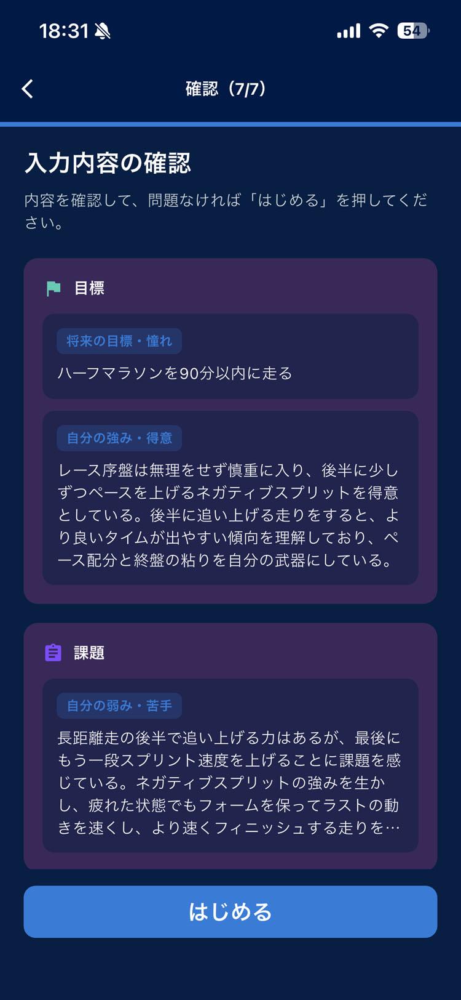
⚠️ 「はじめる」を押すまで、入力内容は保存されません。
途中でアプリを閉じたり戻ったりした場合は、最初からやり直しになります（逆に言えば、途中で戻っても既存のデータは壊れません）。
複数競技のときは、競技タブを切り替えて全競技の結果を確認できます。
2-12. すでに別の端末で使っていた場合（サインイン）
機種変更や再インストールで、前のデータに戻したいときの手順です。
前提: 元の端末で、メールアドレスまたは電話番号を登録済みであること。
- 「BukatsuLog へようこそ」画面で 「既存アカウントでサインイン」 をタップ。
- 登録したメールアドレス（とパスワード）または電話番号を入力してサインイン。
- 元のアカウントに切り替わり、チーム・動画・目標ノートがそのまま復元されます。
登録していなかった場合は復元できません。新しく招待コードで参加し直してください（→ 14）。
2-13. セットアップ後にまずやっておくと良いこと
- [ ] アカウント登録をスキップした人は、
マイページ → 設定 → アカウントの引き継ぎで登録する - [ ]
マイページ → プロフィール設定でプロフィール画像を設定する - [ ]
マイページ → 設定 → 通知設定で受け取る通知を確認する - [ ] 最初の練習動画を 1 本アップロードしてみる（→ 4）
3. 画面の全体像
画面の下に 5 つの入口があります。
| アイコン | 名前 | 何をする場所か |
|---|---|---|
| 🏠 | ホーム | チームのタイムライン。仲間の投稿を見る・いいね・コメント。 |
| 💬 | トーク | 自主練メニューごとの動画一覧（動画の見比べもここから）、コーチとのメッセージ、お知らせ。 |
| 🔴 | 動画分析（中央の赤いボタン） | 練習動画を撮る／選んで AI に分析してもらう。 |
| 📈 | 目標 | 目標ノート（のびる力・Lv・称号・自主練メニュー・課題）。 |
| 👤 | マイページ | 自分のプロフィール、投稿・課題・成長、各種設定。 |
「目標」タブを開くと、画面の見出しは 「目標ノート」 になります。本マニュアルでもこの画面を「目標ノート」と呼びます。
- 「トーク」のアイコンに赤い数字が付いていたら未読があります。
- ホームアイコンをもう一度タップすると、タイムラインが一番上までスクロールします。
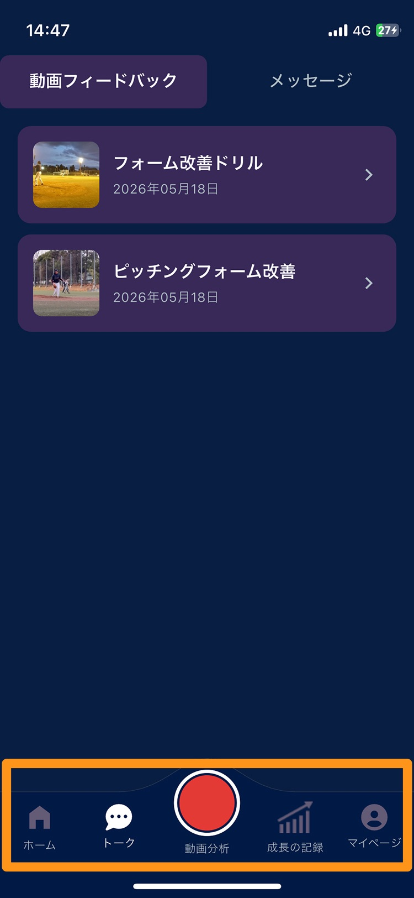
4. 動画分析（AI にフォームを見てもらう）
4-1. 動画を用意する
- 画面下中央の 赤い「動画分析」ボタン をタップします。
- 表示されたシートから選びます。
| 選択肢 | 内容 |
|---|---|
| カメラで撮影する | その場で動画を撮ります。 |
| ライブラリから選ぶ | 端末に保存済みの動画を選びます。 |
- 長い動画は読み込みに数秒〜十数秒かかります（「動画を読み込んでいます…」と表示されます）。
4-2. 撮影のコツ（結果の良し悪しはここで決まります）
分析画面の ?（ヘルプ）でも確認できます。
- 分析したい選手を、できるだけ大きく映す
- 複数の人が写っていても大丈夫です。 次の画面の「分析する人物を囲む」で対象を囲めば、囲んだ選手だけを見て AI が分析します。
- 全身が入るように、正面か真横から撮るのがおすすめ
- 手ブレを抑える（置き撮り・三脚があると理想的）
4-3. ステップ 1/3 ── トリミング
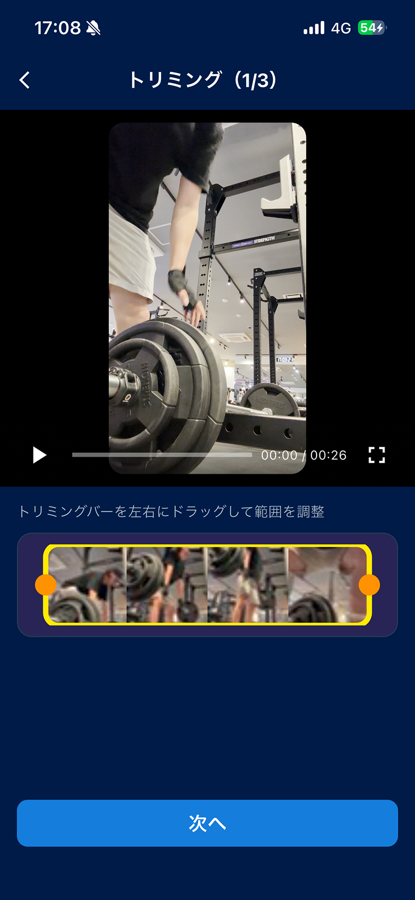
- 動画の下のバーで、分析したい範囲の開始位置と終了位置を指定します。
- 再生ボタンで範囲を確認できます（全画面ボタンでも確認可）。
- 「次へ」 をタップします。
⚠️ 分析できる長さは最大 100 秒です。 これを超えていると「動画は最大 100 秒までです。範囲を短くしてください」と表示されます。範囲を短くしてください。
コツ: 見てほしい動作の 1 回分だけに絞ると、AI のアドバイスが具体的になります。
4-4. ステップ 2/3 ── 動画の内容
分析の前提を指定する画面です。上から順に埋めていきます。
| 項目 | 必須 | 内容 |
|---|---|---|
| どの競技の動画ですか？ | 競技が 2 つ以上の人のみ表示 | 競技を選びます。「自動判定」も選べます。 |
| どのメニューの動画ですか？ | メニューがある人は必須 | 自主練メニューを選びます。「メニューなし」「新しいメニュー」も選べます。 |
| 撮影日 | 任意（自動で入ります） | タップして変更できます。 |
| 説明（この動画について） | 任意・300 文字まで | 「何を意識したか」「どこを見てほしいか」を書くと AI のアドバイスが具体的になります。 |
| 分析する人物を指定（任意） | 任意 | 「人物を囲む」で対象選手を赤枠で囲みます。複数人が映る動画で、AI に見てほしい選手を指定できます。 |
| タイムラインに投稿する | ON / OFF | ON: チームのタイムラインにも表示。OFF: 自分とコーチだけが見られます。 |
- メニューがあるのに未選択のうちは、ボタンが「メニューを選択してください」のまま押せません。
- メニューに紐づけると、そのメニューの継続的な分析として扱われ、つながっているサクセス要素に XP が入ります。
- 準備ができたら 「AI分析へ進む」 をタップします。
「分析する人物を指定」について
- 複数人が映っている動画で、分析してほしい選手を赤枠で囲むと、AI がその選手を対象に分析します。
- 囲まなかった場合は、動画のなかで最も目立つ人物が対象になります。
- 一度囲んだあとは 「囲みを変更」 でやり直せます。
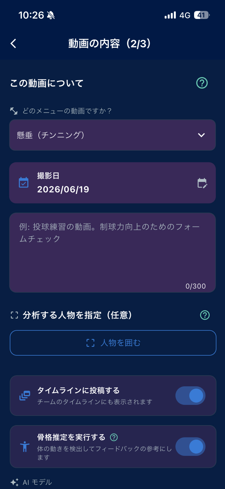
4-5. ステップ 3/3 ── AI 分析
- 動画を確認して、「AIに添削を依頼する」 をタップします。
- 処理は次の順で進みます（画面に「AI分析中…」と、いまの段階が表示されます）。
準備中… → AI添削中・アップロード中… → 動画をアップロード中… → 保存中…
完了すると、そのままフィードバック画面が開きます。Lv が上がった場合はお祝いの表示が出ます。
- 画面下部に、この動画がタイムラインに投稿されるかどうかが表示されます（「添削後、この動画はタイムラインにも投稿されます。」／「この動画はタイムラインに投稿されません。自分とコーチだけが見られます。」）。
通信が切れやすい場所では失敗しやすいので、Wi-Fi 環境での実行をおすすめします。
添削には数十秒〜数分かかることがあります。画面を閉じずにお待ちください。
5. フィードバックの見方
トーク → 動画フィードバック の一覧、またはタイムラインの投稿をタップすると開きます。
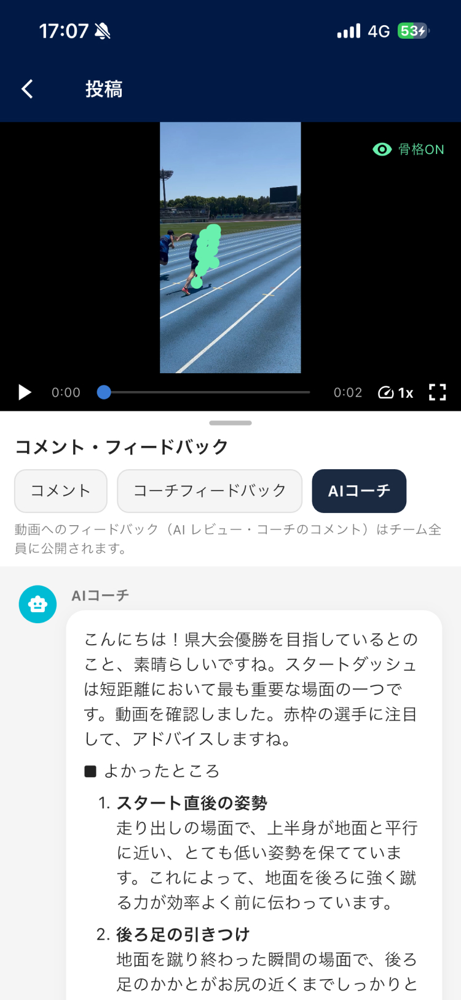
5-1. 動画エリア
| 操作 | 動作 |
|---|---|
| 動画をタップ | 再生 / 一時停止 |
| シークバー | 見たい位置に移動 |
1x （速度） |
タップで再生速度を切り替え（スロー再生でフォーム確認） |
| 全画面アイコン | 全画面表示 |
| 「コーチの書込」 | コーチが動画に書いた赤ペンの表示を切り替え |
- コーチの赤ペンがある場面には、シークバーに赤い縦線が付きます。
- シークバー下の 「コーチの赤ペン ● 12秒 ● 25秒」 のチップをタップすると、その場面にジャンプします。
5-2. コメント・フィードバックの切り替え
動画の下の白いバーで、表示する内容を切り替えます。
| 開いた場所 | 選べるセクション |
|---|---|
| トーク（動画フィードバック）から | AIコーチ / コーチのフィードバック |
| タイムラインの投稿から | コメント / AIコーチ / コーチフィードバック |
- 白いバーを上下にドラッグすると、動画とコメント欄の高さを変えられます。
- バーの下に、そのチームでの公開範囲が明記されています（プランによって表記が変わります）。
5-3. AI コーチに質問する
- 「AIコーチ」を選ぶと、AI からの添削結果が表示されます。
- 下の入力欄から 追加で質問 できます（例: 「ここをもっと良くするには？」）。
- 入力欄の上に質問例のチップが並ぶので、タップするだけでも質問できます。
- AI の返信内に出てくる 「12秒」 のような表記をタップすると、動画のその位置にジャンプします。
- 「12〜25秒」のような範囲表記にも対応しました。前後どちらの数字をタップしても、その位置にジャンプします。
- 自分のメッセージは長押しで削除できます。
5-4. コーチのフィードバック
- コーチからのコメントが並びます。読み取り専用で、ここから返信はできません。
- 相談したいことがあれば
トーク → メッセージからコーチに DM を送ってください。
5-5. その他の操作
| 操作 | 場所 |
|---|---|
| 動画のタイトルを編集 | 画面上部のタイトルをタップ、または右上の ⋮ →「タイトルを編集」 |
| 動画を削除 | 右上の ⋮ →「動画を削除」 |
| 投稿を削除（自分の投稿） | 右上の ⋮ →「投稿を削除」 |
| 投稿の本文を編集（自分の投稿） | 「コメント」タブの本文右の ⋯ |
6. 目標ノート（成長記録・サクセスモード）
下部の 「目標」 タブです。画面の見出しは 「目標ノート」。あなたの成長を可視化する画面です。
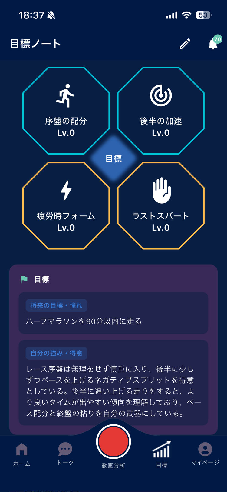
6-1. 画面の構成
| 要素 | 内容 |
|---|---|
| 中央のセル | あなたの目標。タップで全文表示・編集。 |
| 周囲の 4 セル | サクセス要素（のびる力）。強み 2 個・弱み 2 個。タップで詳細。 |
| 自主練メニュー | 4 要素の下。→ 7 |
| 称号カード | 一番下。総合 Lv に応じて AI が称号を付けます。 |
| 右上の競技名 | 複数競技の人のみ。競技を切り替えます。 |
| 右上の ✏️ | 「のびる力」の名前・説明を編集します。 |
6-2. Lv と XP のしくみ
サクセス要素はそれぞれ XP（経験値） がたまり、Lv が上がります。
XP がたまるきっかけ
| きっかけ | もらえる XP |
|---|---|
| 動画の AI 添削を受ける | 関連するサクセス要素に最大 25 XP（関連度の高い順に複数の要素へ配分。2 位以降は 1 段階ずつ少なく、最低 5 XP） |
| 自分の投稿にコメントをもらう | 10 XP |
| 自分の投稿にいいねをもらう | 5 XP |
Lv アップに必要な累積 XP
| Lv | 1 | 2 | 3 | 4 | 5 以降 |
|---|---|---|---|---|---|
| 累積 XP | 25 | 60 | 110 | 180 | 100 ずつ |
序盤の Lv は上がりやすく設計されています。まずは動画を 1 本アップしてみてください。
要素をタップすると、現在の Lv、XP / 次の Lv に必要な XP、次の Lv までの残り XP が確認できます。
6-3. 課題（この力につながる課題）
サクセス要素の詳細シートから、その力に紐づく課題メモを作れます。
- 「この力につながる課題」の 「追加」 をタップ。
タイトル（40 文字まで・必須）とやり方・メモ（200 文字まで・任意）を入力。- 「作る」で保存。
- 完了チェックの概念はありません。編集・削除は各行のアイコンから行います。
- ここで作った課題は、マイページの「課題」タブや、あなたのプロフィールにも表示されます。
6-4. のびる力・目標を編集する
- のびる力の編集（右上 ✏️）: 名前（16 文字まで）と説明（120 文字まで）を変更できます。
⚠️ 内容を変更すると、その力の Lv・XP は 0 にリセットされます。 ほかの力には影響しません。
- 目標の編集: 中央のセルをタップ → 「編集する」。200 文字まで。Lv はリセットされません。
6-5. まだサクセス要素が無いとき
- 初回セットアップを最後まで終えていない場合は、案内が表示されます。チュートリアルを最後まで進めてください。
- 複数競技の人で、まだ設定していない競技を選んだ場合は「〇〇のサクセス要素はまだありません」と表示されます。「質問に答える」 をタップすると、その競技だけの短縮チュートリアル（目標 → AI チャット → 確認）が始まります。ほかの競技のデータには一切影響しません。
7. 自主練メニュー
ver. 2.0 で操作が大きく変わりました。 目標ノートの「自主練メニュー」見出しの右にあるボタンが 「追加」→「編集」 になり、1 つのシートでまとめて管理できます。
7-1. 「自主練メニューを編集」シート
「自主練メニュー」見出し右の 「編集」 をタップすると開きます。トークタブの「動画フィードバック」一覧の下にある「自主練メニューを編集」からも、同じシートが開きます。 上から 3 つのブロックに分かれています。
| ブロック | できること |
|---|---|
| 自分のメニュー（n 個） | いま持っているメニューの一覧。チェックを外すと非表示（＝取り組みをいったん止める）、チェックを入れると再開。 |
| コーチのメニュー（n 個） | コーチが「練習メニュー設定」で登録したチーム共通メニュー。チェックを入れると自分のメニューとして採用されます。採用時は「つながるサクセス要素」を自分で 1 個以上選びます。 |
| 新しいメニューを追加 | 手入力で 1 件作れます。メニュー名 / やり方・メモ（任意） / つながるサクセス要素（1 個以上）。 |
最後に 「保存」 をタップすると、すべての変更がまとめて反映されます。
- コーチのメニューは、シートを開くたびに最新を取り直します（コーチが後から追加したメニューもすぐ出ます）。
- すでに採用済みのコーチメニューは「自分のメニュー」側に出るので、二重には表示されません。
- サクセス要素を選んでいないコーチメニューにチェックが入っていると「保存」は押せません。
- 保存に一部失敗したときは「一部のメニューを保存できませんでした」と表示されます（成功したぶんは残ります）。
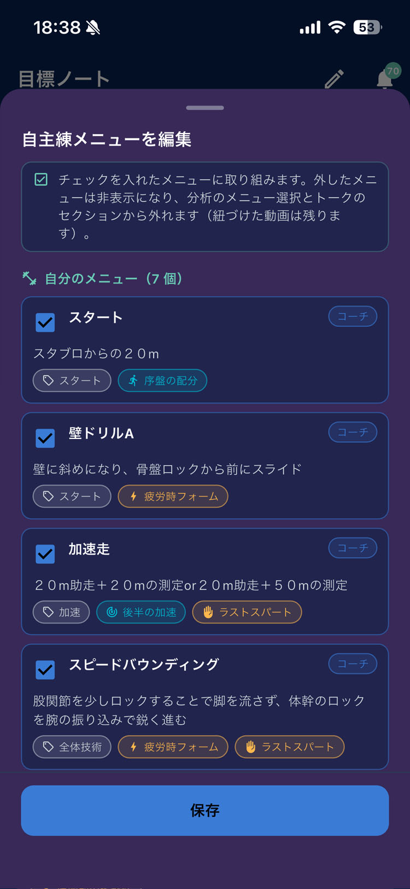
7-2. メニューカードの見方
| 表示 | 意味 |
|---|---|
| カテゴリのラベル | コーチが登録したカテゴリ（例: 体幹 / シュート）。 |
| 「参考リンク」チップ | コーチが登録した参考 URL があります。カードをタップして詳細を開くとリンクが出ます。 |
| 力のアイコンのチップ | つながっているサクセス要素。 |
- カードをタップすると、詳しい説明と参考リンクが表示されます。
7-3. 1 件ずつの操作（カード右の ⋮）
| 操作 | 内容 |
|---|---|
| 編集 | 内容を変更します。※コーチのメニュー由来のカテゴリ・参考リンクは変更されず、そのまま保持されます。 |
| 非表示にする | 分析のメニュー選択と、トークの動画一覧セクションから外れます。紐づく動画は消えず「その他の動画」に移ります。 いつでも再表示できます。 |
| 削除 | ⚠️ このメニューに紐づくアップロード済み動画がアーカイブされ、トーク一覧から消えます（「非表示動画」からは引き続き見られます）。タイムラインの投稿には影響しません。取り消せません。 |
動画をメニューに紐づけて分析すると、つながっているサクセス要素の XP がたまります。 メニューを活用するのが Lv アップの近道です。
8. タイムライン
下部の 「ホーム」 タブです。チームのメンバーの投稿が新しい順に並びます。
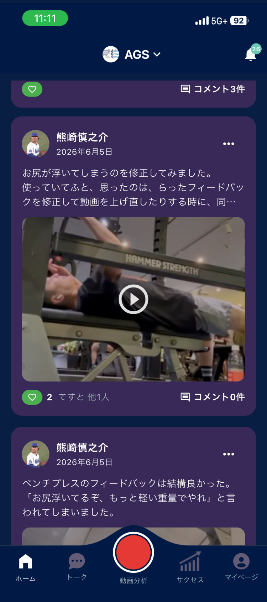
8-1. 見る
| 操作 | 動作 |
|---|---|
| カードをタップ | 投稿の詳細（動画 + コメント + AI コーチ + コーチフィードバック）を開く |
| アイコン・名前をタップ | そのメンバーのプロフィールを開く |
| 下に引っ張る | 最新の投稿に更新（Pull to refresh） |
| 下までスクロール | 古い投稿を自動で追加読み込み |
| ホームアイコンをタップ | 一番上までスクロール |
| 上部のチーム名をタップ | 所属チーム一覧を開く（→ 13） |
| 右上のベル | 通知一覧を開く |
8-2. 反応する
- いいね: ハートのボタンをタップ。もう一度タップで取り消せます。
- いいねした人を見る: ハートの右の「〇〇 他 n 人」をタップ。
- コメント: カードをタップして詳細を開き、「コメント」から投稿します。
自分の投稿にいいね（5 XP）やコメント（10 XP）をもらうと、サクセス要素の XP がたまります。
8-3. 自分の投稿を編集・削除する
自分の投稿にだけ、右上に ⋯ が表示されます。
| メニュー | 内容 |
|---|---|
| 編集 | 本文を書き換えます。 |
| 削除 | ⚠️ 取り消せません。確認ダイアログが出ます。 |
コメントや投稿本文は、保存前に AI が内容をチェックします。不適切と判断された場合は「保存できません」と表示され、保存されません。
8-4. 投稿する
タイムラインへの投稿は、動画分析の途中で行います（→ 4-4）。
「動画の内容」画面の 「タイムラインに投稿する」を ON にして分析を実行すると、添削後にタイムラインへ投稿されます。
9. トーク
下部の 「トーク」 タブです。2 つのサブタブがあります。未読があるとタブに赤い数字が付きます。
9-1. 「動画フィードバック」タブ（自主練メニューの一覧）
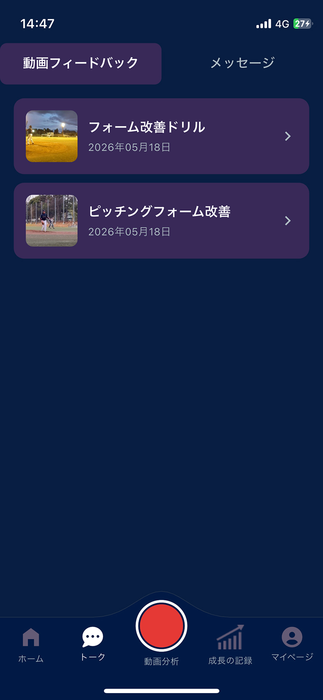
ver. 2.0 で構成が変わりました。 動画がいきなり並ぶのではなく、まず 自主練メニューの一覧 が表示されます。
- 1 行が 1 つの自主練メニューです。そのメニューの最新動画のサムネイル、動画の本数、最新の日付が出ます。
- 未読のフィードバックがあるメニューには赤い数字が付きます（そのメニュー内の合計）。
- メニューをタップすると、そのメニューの動画一覧が開きます（→ 9-2）。
- どのメニューにも紐づいていない動画は 「その他の動画」 にまとまります。
- 自主練メニューを 1 つも持っていない場合は、「すべての動画」 の 1 行だけが出ます。
- 一覧の下の 「自主練メニューを編集」 から、目標ノートと同じ編集シートが開きます（→ 7-1）。ここでメニューを追加・非表示にできます。
- 一番下の 「非表示動画を見る」 から、アーカイブされた動画（メニュー削除時にアーカイブされたもの）を見られます。ここから再表示・完全削除もできます。
- 複数競技の人は、右上のドロップダウンで競技を絞り込めます（「すべて」も選べます）。
動画をまだ読み込み中のメニューは本数が「読み込み中…」と出ます。一覧を下にスクロールすると続きが読み込まれます。
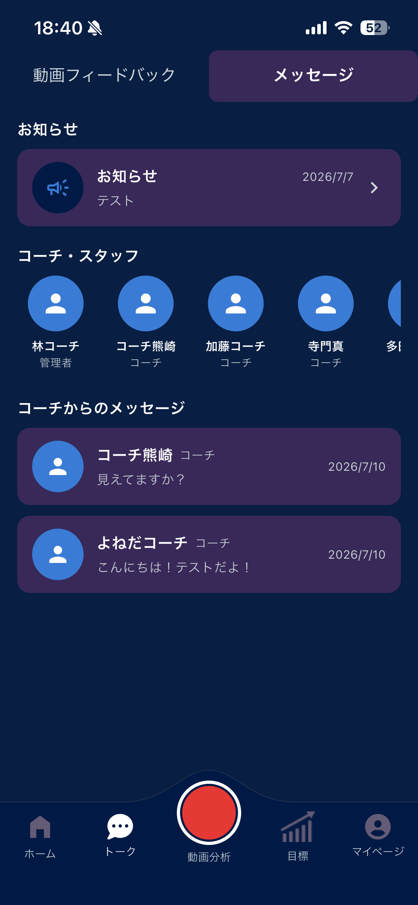
9-2. メニューの動画一覧
メニューをタップすると開く画面です。そのメニューに紐づいた動画が新しい順に並びます。
- 動画をタップすると、これまでどおりフィードバック画面が開きます（→ 5）。
- 未読のフィードバックがある動画には赤い数字が付きます。開くと消えます。
- 動画が 2 本以上あると、右上に 「⇄ 見比べる」 ボタンが出ます（→ 9-3）。
- 過去に見比べた組み合わせがあると、一覧の上に 「最近の見比べ」 が横並びで出ます。タップすると同じ 2 本をすぐ開き直せます。長押しで履歴を削除できます。
- この履歴はアカウントに保存されるので、別の端末でログインしても同じ履歴が出ます。
9-3. 動画を見比べる
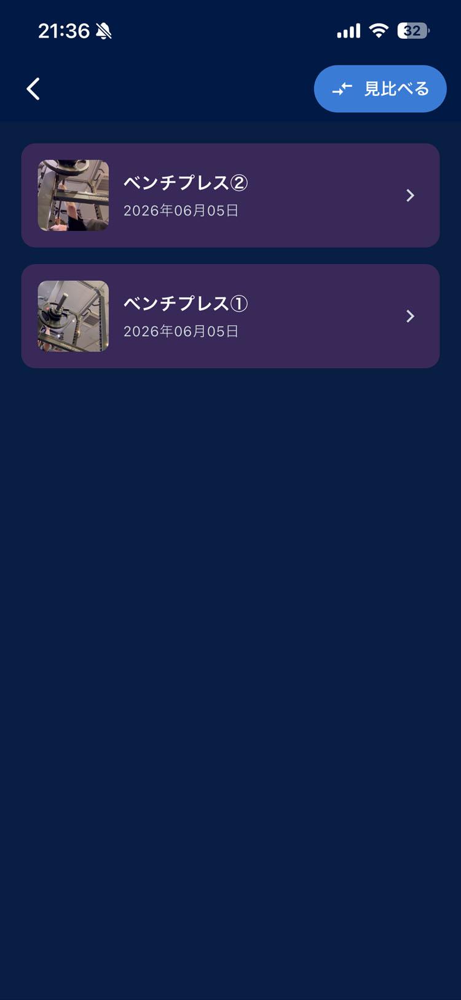
同じメニューの動画 2 本を並べて、フォームの変化を見比べられます。
開き方
- メニューの動画一覧で、右上の 「⇄ 見比べる」 をタップします。
- 見比べたい動画を 2 本 タップして選びます（3 本目を選ぶと、先に選んだ方が外れます）。
- 下の 「2本を見比べる」 をタップします。
古い方が A、新しい方が B になります（「前 → 今」で並びます）。端末に動画がまだ届いていないときは「動画を準備中です」と出ます。少し待ってからやり直してください。
見比べ画面でできること
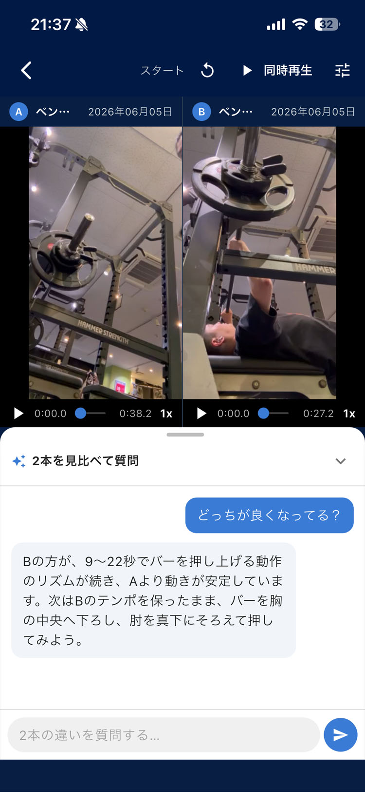
| 操作 | 内容 |
|---|---|
| それぞれ再生・シーク | 上下（横向きにすると左右）に並んだ 2 本を、別々に再生・一時停止・シークできます。動画をタップしても再生 / 一時停止します。 |
| 同時再生 | 画面右上の 「▶ 同時再生」 で 2 本をまとめて再生・停止します。 |
| 頭出し | 右上の ↺ で 2 本とも先頭（再生範囲の開始位置）に戻します。 |
| 再生速度 | 各動画のシークバー右の 1x をタップすると 1 → 0.75 → 0.5 → 0.25 倍速で切り替わります。 |
| AI に質問 | 右下の 💬 をタップするとチャットが開き、2 本の違いについて AI コーチに質問できます。チャット面は上端をドラッグして高さを変えられます。 |
見比べ画面のチャットはその場かぎりで、閉じると消えます（動画ごとの AI コーチのチャットとは別です）。
詳細設定（動画ごとの調整）
右上の ⚙（詳細設定） から、A・B それぞれに次の設定ができます。設定は今回の見比べだけに反映され、元の動画は変わりません。
| 項目 | 内容 |
|---|---|
| 再生速度 | 0.25 〜 2 倍速をドロップダウンから選びます。 |
| 再生する範囲 | スライダーの両端で開始・終了を指定すると、その区間だけをくり返し再生します。「現在位置を開始に / 終了に」でも決められます。動かしている位置のコマがプレビューに出ます。 |
| 切り取り | プレビュー画像をタップすると拡大ダイアログが開きます。ピンチで拡大・ドラッグで移動して、見たい部分だけを枠に収めます（iPhone の写真のトリミングと同じ操作）。 |
| 左右反転 | 逆サイドから撮った動画と向きをそろえます。 |
| 「A と同じ設定」 | B のカード右上のボタン。A の設定（速度・範囲・切り取り・反転）をまとめて B にコピーします。 |
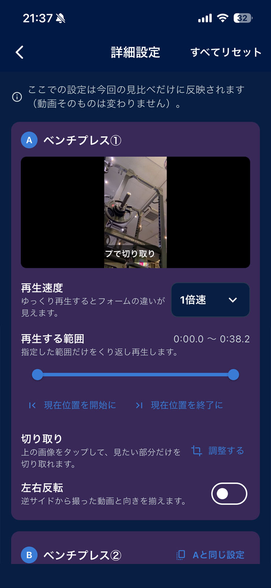
9-4. 「メッセージ」タブ
| セクション | 内容 |
|---|---|
| お知らせ | コーチからチーム全員への一斉連絡。タップでスレッドを開きます。返信はできません。 |
| コーチ・スタッフ | コーチ・管理者・保護者のアイコン一覧。タップすると 1 対 1 のチャットが開きます。 |
| コーチからのメッセージ | 進行中の 1 対 1 チャットの一覧。未読があると青い点が付きます。 |
1 対 1 チャット（DM）でできること
- 下の入力欄からメッセージを送信。
- 自分が送ったメッセージは長押しで編集・削除。
- 自分の最後のメッセージに、コーチが読んだかどうかの表示が出ます。
チームのプランによっては DM が使えず、「お知らせ」のみが表示されます。
10. 通知
各画面の右上の ベルアイコン から開きます。
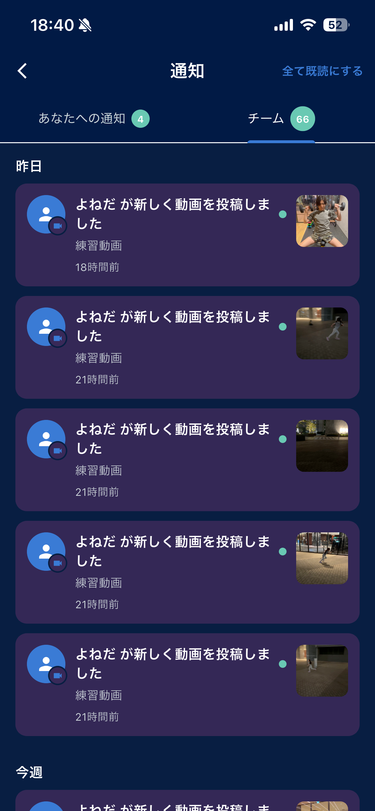
10-1. 通知一覧
| タブ | 届くもの |
|---|---|
| あなたへの通知 | 自分の投稿へのコメント・いいね、新しい課題、コーチからのメッセージ、AI 添削の完了など |
| チーム | メンバーの参加、動画投稿、課題達成、レベルアップなどチームの動き |
- 通知をタップすると、該当の画面（投稿・動画・チャットなど）が開きます。
- 右上の 「全て既読にする」 で、まとめて既読にできます。
- 「今日 / 昨日 / 今週 / 先週 / それ以前」でグループ分けされます。
10-2. 通知設定
マイページ → 設定 → 通知設定 で、種類ごとに ON / OFF を切り替えられます。
| 種類 | 内容 |
|---|---|
| コーチからのメッセージ | コーチや管理者から届く 1:1 メッセージ |
| 動画フィードバック | コーチのコメント・書き込み・AI 添削の到着 |
| コーチからのお知らせ | チーム全員に届く一斉お知らせ |
| タイムライン投稿 | チームメンバーの新しい投稿 |
⚠️ OFF にした種類は、端末へのプッシュ通知だけでなくアプリ内の通知一覧にも表示されなくなります。
11. マイページ・プロフィール
下部の 「マイページ」 タブです。
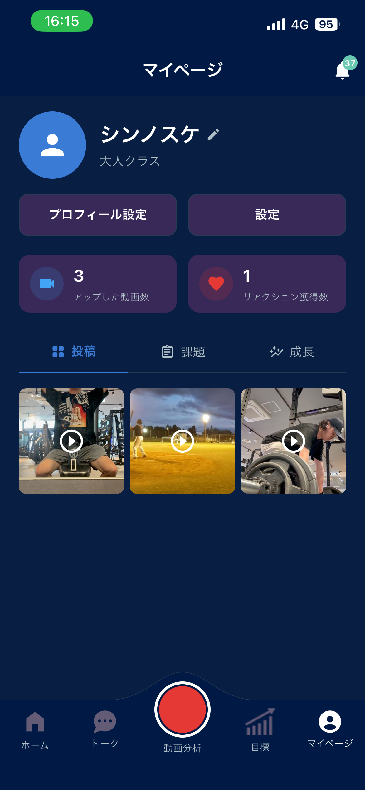
11-1. 表示される情報
- プロフィール画像、名前、クラス
- アップした動画数 / リアクション獲得数
- 3 つのタブ
| タブ | 内容 |
|---|---|
| 投稿 | 自分の投稿のサムネイル一覧。タップで詳細。 |
| 課題 | 「目標・強み」と「課題」（チュートリアルで入力した内容） |
| 成長 | サクセス要素（のびる力）と称号 |
11-2. プロフィール設定
「プロフィール設定」ボタン、または名前の横の ✏️ から開きます。
| 項目 | 内容 |
|---|---|
| プロフィール画像 | 円形の画像をタップして写真を選びます。自動で正方形に切り出されます。 |
| 名前 | 30 文字まで。チーム内の表示名にも反映されます。 |
| 将来の目標・憧れ | 200 文字まで |
| 自分の強み・得意 | 200 文字まで |
| 自分の弱み・苦手 | 200 文字まで |
最後に 「保存する」 をタップしてください。
11-3. ほかのメンバーのプロフィール
タイムラインのアイコン・名前、いいね一覧、チーム詳細のメンバー行からタップして開けます。閲覧のみです。
12. 設定
マイページ → 「設定」ボタン から開きます。
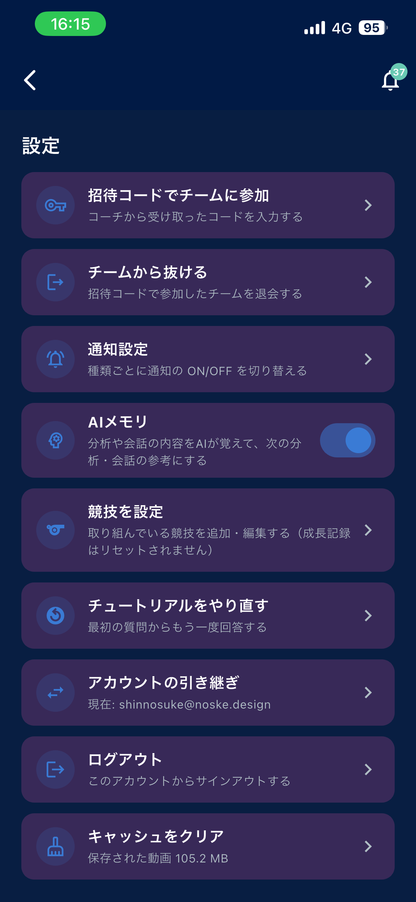
| 項目 | 内容 |
|---|---|
| 招待コードでチームに参加 | 別のチームに追加で参加します。参加後、チーム切り替えメニューに出てきます。 |
| チームから抜ける | 抜けるチームを選んで退会します。投稿や課題は残りますが、そのチームのトークや課題は見られなくなります。 |
| 通知設定 | 種類ごとの通知 ON / OFF（→ 10-2） |
| AIメモリ | ON にすると、分析や会話の内容を AI が覚えて、次の分析・会話の参考にします（既定 ON）。 |
| 競技を設定 | 取り組んでいる競技を追加・編集します。成長記録（Lv・称号）はリセットされません。 |
| チュートリアルの回答を編集 | レベル・強み・弱み・目標を個別に変更します。成長記録はリセットされません。 詳細は下記。 |
| チュートリアルをやり直す | ⚠️ 名前の入力から全質問に答え直します。詳細は下記。 |
| アカウントの引き継ぎ | メール / 電話番号の登録・変更、別端末からのログイン（→ 14） |
| ログアウト | アカウントからサインアウトします（メール等を登録済みの場合のみ表示）。 |
| キャッシュをクリア | 端末に保存された動画ファイルを削除します。次回視聴時に再ダウンロードされます。容量が気になるときに。 |
| 利用規約 / プライバシーポリシー | ブラウザで開きます。 |
| バージョン | アプリのバージョン。問い合わせ時に伝えてください。 |
「チュートリアルの回答を編集」
チュートリアルで答えた内容だけを、やり直さずに書き換えられる画面です。
| 編集できる項目 | 補足 |
|---|---|
| 自分のレベル感 | ビギナー 〜 エキスパート |
| 自分の強み・得意 | |
| 自分の弱み・苦手 | |
| 将来の目標・憧れ |
- 複数競技の人は 競技ごと に設定できます。
- 保存すると「回答を更新しました」と表示されます。
- 変更した内容は、次回の AI 動画分析・AI コーチから反映されます。
- ⚠️ 目標ノートのサクセス要素や自主練メニューは、ここでは変わりません（作り直したい場合は「チュートリアルをやり直す」を使います）。
- 名前は「プロフィールを編集」、競技・ポジションは「競技を設定」から変更してください。
「チュートリアルをやり直す」の注意
⚠️ 最後まで進めて確定ボタンを押した時点で、目標と目標ノート（のびる力の Lv・称号）が新しい内容にリセットされます。
チーム所属・アカウント・投稿は残ります。途中で戻ればこれまでの記録はそのままです。
・「新しい競技を始めた」だけの場合は、リセットされない 「競技を設定」 を使ってください。
・「レベルや強み・弱みだけ直したい」場合は、リセットされない 「チュートリアルの回答を編集」 を使ってください。
競技を追加したあとの流れ
設定 → 競技を設定で「＋競技を追加」→ 競技名を入力 → 「保存する」- 「目標」タブの右上で追加した競技に切り替える
- 「〇〇のサクセス要素はまだありません」→ 「質問に答える」 で、その競技だけのサクセス要素・メニューを作る
13. チーム・競技の切り替え
13-1. チームの切り替え（複数チームに所属している場合）
- ホーム（タイムライン）上部の チームアイコン + チーム名 をタップ。
- 所属チーム一覧のシートが開きます。
| 操作 | 動作 |
|---|---|
| チーム名の行をタップ | そのチームの詳細（メンバー一覧）を開きます。 |
| 右の 「切り替え」 | そのチームを表示対象（アクティブ）にします。現在のチームは「選択中」と表示されます。 |
- 切り替えると、タイムライン・トーク・通知・マイページの表示がそのチームのものに変わります。
- チーム詳細では、メンバーが 「プレイヤー」 と 「監督・コーチ」 の 2 タブに分かれています。メンバーをタップするとプロフィールが開きます。
- AI メモリ（AI が覚えている内容）はチームごとに別々です。チームを切り替えると、そのチームでの会話・分析の文脈が使われます。
13-2. 競技の切り替え（複数競技を登録している場合）
| 画面 | 切り替え場所 |
|---|---|
| 目標（目標ノート） | 右上の競技名ドロップダウン |
| トーク | タブの上のドロップダウン（「すべて」も選べます） |
| 動画分析（内容ステップ） | 「どの競技の動画ですか？」 |
14. 機種変更・データの引き継ぎ（重要）
14-1. しくみ
BukatsuLog は、招待コードで参加した時点では 端末に紐づいた匿名アカウント で動いています。
⚠️ 匿名のままアプリを削除・機種変更すると、データは復元できません。
動画、AI のアドバイス、目標ノートの Lv、称号、投稿がすべて失われます。
これを防ぐために、メールアドレスまたは電話番号を登録してください。
14-2. 引き継ぎの準備（今の端末で行う）
マイページ → 設定 → アカウントの引き継ぎ- 次のどちらか（両方でも可）を登録します。
| 項目 | 手順 |
|---|---|
| メールアドレスを登録 | メールアドレスとパスワードを設定します。 |
| 電話番号を登録 | 電話番号を入力し、SMS の確認コードを入力します。 |
- 登録済みのメールアドレスは、同じ画面から 変更 できます。
- パスワードは忘れないように管理してください。
14-3. 新しい端末で復元する
- 新しい端末に BukatsuLog をインストールして起動（テスト版のため、2-1 と同じく管理者からリンクを受け取ってインストールします）。
- 「BukatsuLog へようこそ」で 「既存アカウントでサインイン」。
- 登録したメールアドレス（とパスワード）または電話番号を入力。
- 元のデータが復元されます。招待コードの再入力は不要です。
設定 → アカウントの引き継ぎ → 既存のアカウントにログイン からもサインインできます。15. 困ったときは（FAQ・トラブルシューティング）
セットアップ
Q. App Store / Google Play で BukatsuLog を検索しても出てきません。
A. 現在はテスト版として配布しているため、ストアの検索には出ません。管理者からインストール用のリンクを受け取ってください（iPhone は TestFlight、Android は Google Play の外部テスター用リンク）。手順は 2-1 を参照してください。
Q. インストールリンクが開けません／エラーになります。
A. リンクには参加人数の上限があり、期限切れや定員超過で開けないことがあります。管理者に連絡して、新しいリンクを発行してもらってください。
Q.（iPhone）アプリが起動できなくなりました。
A. TestFlight のテスト版には有効期限があります。TestFlight を開いて BukatsuLog を最新版に更新してください。
Q. 招待コードがありません。
A. 所属チームのコーチに発行を依頼してください。BukatsuLog は招待コードなしでは利用できません。
Q. 招待コードが「見つかりません」と出ます。
A. 打ち間違いがほとんどです。数字の 0 と英字の O、1 と I を確認してください。それでもだめな場合は、コーチに新しいコードを発行してもらってください。
Q. 「期限切れか、使用回数を超えています」と出ます。
A. コードの有効期限・使用上限に達しています。コーチに再発行を依頼してください。
Q. 「アプリでは使用できません」と出ます。
A. コーチ用・管理者用の招待コードです。コーチに選手用のコードを発行してもらってください。
Q. 「利用規約に同意」のチェックが押せません。
A. 先に「コードを認証する」で招待コードの認証を済ませてください。認証が終わるとチェックできるようになります。
Q. チュートリアルの途中でアプリを閉じてしまいました。
A. 最後の「はじめる」を押すまで保存されないため、最初からやり直しになります。同じ招待コードでもう一度認証できますので、10〜15 分の余裕があるときに、通信の安定した場所で進めてください。
Q. AI とのチャットが進みません。
A. もう一度送信してみてください。何度か失敗すると「AI にまとめて提案してもらう」ボタンが出るので、そこから先に進めます。
Q. アプリを開いても「ようこそ」画面に戻されます。
A. 所属チームが 0 件になっています（未参加、または退会・チーム削除）。招待コードで参加し直してください。
Q. 起動時に「接続できませんでした」と出ます。
A. 通信が不安定なときに出ます。電波の良い場所で「再試行」をタップしてください。
動画分析
Q. 「動画は最大 100 秒までです」と出ます。
A. トリミング画面で範囲を短くしてください。見てほしい動作 1 回分に絞るのがおすすめです。
Q. 複数人が写っている動画でも分析できますか？
A. できます。「動画の内容」画面の 「人物を囲む」 で分析したい選手を囲んでください。AI がその選手を対象に分析します。
Q. 動画を再生できません。
A. 「もう一度読み込む」を試してください。改善しない場合は別の動画でお試しください。
Q. アップロードが途中で止まります。
A. 通信環境の問題が多いです。Wi-Fi 環境で再実行してください。
Q. AI のアドバイスがぼんやりしています。
A. 「動画の内容」で説明文（何を意識したか・どこを見てほしいか）を書く、対象人物を囲む、動作 1 回分に絞る、メニューに紐づける──この 4 つで精度が上がります。
Q. 「見比べる」ボタンが出ません。
A. そのメニューの動画が 2 本以上ないと出ません。動画を分析するときに同じ自主練メニューを選ぶと、ここにたまっていきます。
Q. 見比べ画面で片方の動画が真っ黒（読み込めません）になります。
A. 端末に動画がまだ届いていない可能性があります。一覧に戻ってしばらく待ってから、もう一度開いてください。
Q. 見比べの詳細設定（速度・範囲・切り取り）は保存されますか？
A. 保存されません。その回の見比べだけに反映され、閉じるとリセットされます。元の動画も変わりません。
Q. 「最近の見比べ」は機種変更しても残りますか？
A. 残ります。アカウントに保存されるので、同じアカウントでログインすれば別の端末でも同じ履歴が出ます。不要な履歴は長押しで削除できます。
目標ノート・自主練メニュー
Q. Lv が上がりません。
A. 動画の AI 添削（最大 25 XP）、コメント（10 XP）、いいね（5 XP）で XP がたまります。動画を自主練メニューに紐づけて分析すると、つながっている要素に XP が入ります。
Q. のびる力を編集したら Lv が 0 になりました。
A. 仕様です。内容を変更するとその力の XP が 0 にリセットされます（ほかの力は影響しません）。編集前に確認ダイアログが出ます。
Q. 「追加」ボタンが無くなりました。
A. 「編集」に変わりました。自主練メニューの見出し右の 「編集」 から、コーチのメニューの採用、自分のメニューの採用/非表示、新規追加をまとめて行えます。
Q. コーチのメニューの文言を変えたいです。
A. チームの練習メニューはコーチが決めた内容のため、アプリからは変更できません。取り組むメニューを選ぶことだけができます。変更が必要な場合はコーチにご相談ください。
Q. コーチが新しいメニューを追加したのに出てきません。
A. 目標ノートの「編集」シートを開き直してください。開くたびに最新のコーチメニューを取り直します。
Q. 「参考リンク」はどこから開けますか？
A. メニューのカードをタップして詳細を開くと、「参考リンク」の欄が出ます。タップするとブラウザで開きます。
Q. 新しい競技を始めました。どうすれば？
A. 設定 → 競技を設定 で追加してください。チュートリアルのやり直しは不要で、成長記録もリセットされません。追加後、「目標」タブでその競技に切り替えて「質問に答える」を進めます。
Q. 目標や強み・弱みだけ直したいです。
A. 設定 → チュートリアルの回答を編集 から変更できます。成長記録（Lv・称号）はリセットされません。
そのほか
Q. 通知が来ません。
A. ① 端末の設定でアプリの通知が許可されているか、② 設定 → 通知設定 で該当の種類が ON か、を確認してください。
Q. コーチのコメントに返信したい。
A. 「コーチのフィードバック」からは返信できません。トーク → メッセージ からコーチに DM を送ってください。
Q. お知らせに返信できません。
A. 一斉お知らせは返信できない仕様です。個別の相談は DM をご利用ください。
Q. 端末の容量が足りません。
A. 設定 → キャッシュをクリア で、保存済みの動画ファイルを削除できます。次回視聴時に再ダウンロードされます。
Q. 投稿を間違えました。
A. 自分の投稿は右上の ⋯ から編集・削除できます。削除は取り消せません。
Q. チームを抜けたい。
A. 設定 → チームから抜ける で抜けるチームを選びます。投稿や課題は残りますが、そのチームのトーク・課題は見られなくなります。
16. 用語集
| 用語 | 意味 |
|---|---|
| TestFlight | iPhone / iPad にテスト版アプリを入れるための Apple 公式アプリ。App Store から入れてから、管理者のリンクを開きます。 |
| 外部テスター | 正式公開前のアプリをテストで使う人。管理者から受け取ったリンクで参加します。 |
| 招待コード | チームに参加するためのコード。コーチが発行します。アプリで使えるのは選手用のみ。 |
| チーム | 部活・クラブの単位。投稿や動画はチーム内だけで共有されます。 |
| 目標ノート | 「目標」タブの画面名。目標とサクセス要素（のびる力）で成長を可視化する機能（旧「サクセスモード」）。 |
| サクセス要素（のびる力） | AI があなたの回答から作る 4 つの伸ばすポイント（強み 2 / 弱み 2）。 |
| XP | サクセス要素の経験値。たまると Lv が上がります。 |
| 称号 | 総合 Lv に応じて AI が付けてくれる呼び名。 |
| 課題 | サクセス要素に紐づく、いま取り組みたいことのメモ。 |
| 自主練メニュー | AI 提案・コーチ登録・自作の練習メニュー。動画を紐づけると XP がたまります。 |
| チームの練習メニュー | コーチが「練習メニュー設定」で登録した、チーム共通の練習メニュー。カテゴリ・参考リンクが付くことがあります。 |
| カテゴリ | コーチがメニューに付けた分類ラベル（例: 体幹 / シュート）。 |
| 参考リンク | コーチがメニューに登録したお手本動画・解説記事などの URL。 |
| AI 添削 | アップロードした動画に対する AI のフォーム分析とアドバイス。 |
| AI コーチ | 添削結果について質問できるチャット相手。 |
| 人物を囲む | 複数人が映る動画で、AI に分析してほしい選手を赤枠で指定する機能。 |
| 赤ペン | コーチが動画に直接書き込んだ線。 |
| AI メモリ | 過去の分析・会話の内容を AI が覚えて次に活かす機能。チームごとに別。設定で ON / OFF。 |
| 非表示動画 | メニュー削除などでアーカイブされた動画。トーク一覧の「非表示動画を見る」から閲覧。 |
| 見比べ | 同じメニューの動画2本を並べて再生し、フォームの変化を確認する機能（トーク>メニューの動画一覧>「見比べる」）。 |
| 最近の見比べ | 過去に見比べた 2 本の組み合わせの履歴。アカウントに保存され、別の端末でも表示されます。 |
17. 付録: 配布前チェックリスト
このマニュアルを部員に配る前に、運用担当者が確認する項目です。
- [ ]【SS】と書かれた箇所にスクリーンショットを差し込んだ
- [ ]テスト版のインストールリンク（iOS: TestFlight / Android: Google Play 外部テスト）を用意し、配布方法を決めた
- [ ] テスターの定員に空きがあることを確認した
- [ ] 招待コードの発行方法・配布方法をチーム内で決めた
- [ ] チームのプラン・設定に応じて、記載を調整した
- [ ] 問い合わせ窓口（担当者・連絡方法）を記載した
- [ ] 保護者向けの説明が必要な場合、14 を抜粋して配布した
問い合わせ先
FAQ内で解決しないご不明点はこちらのお問い合わせフォームへ